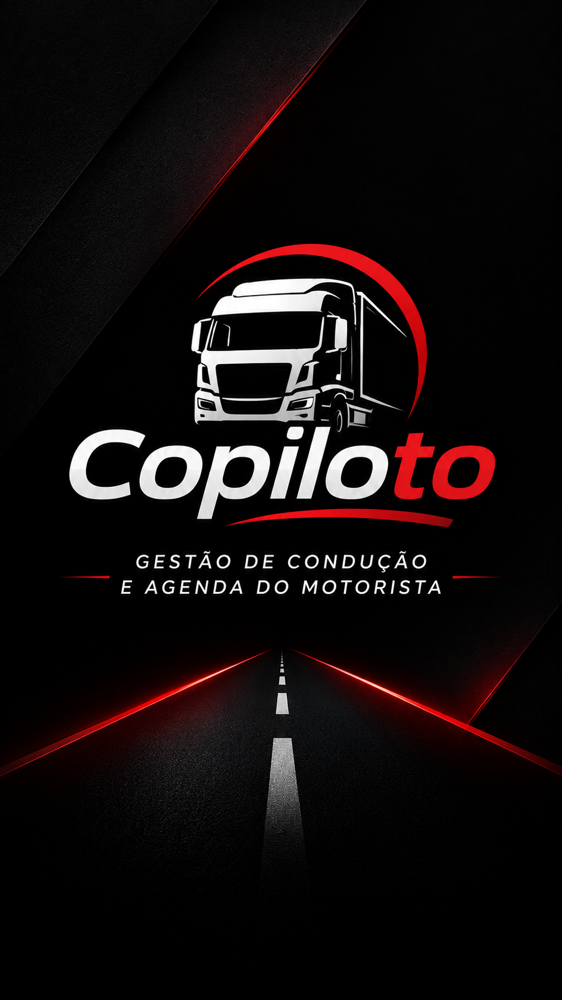

Ficha diária
--
Preenche a hora de início
--
KM final menos KM inicial

Depois da entrada manual, imprime o talão e confere estes 4 pontos. Esquema ilustrativo: o talão real varia conforme a marca do tacógrafo.
Toca num tipo para publicar o alerta com o teu local.
: Todos os teus registos ficam guardados exclusivamente na memória do teu telemóvel. Não recolhemos nem vendemos dados pessoais.
✉️ Contacto & Parcerias: copiloto.estrada@gmail.com
A ficha diária, os repousos, as pausas e as notas ficam guardados apenas na memória do teu telemóvel (armazenamento local da app). Não são enviados para nenhum servidor e funcionam sem internet e sem conta.
Só se criares conta na aba Estrada usamos o Supabase (base de dados na nuvem) para guardar: email e palavra-passe (autenticação), perfil (nome, país, foto, estado), publicações e fotos, gostos, comentários, alertas de rota, pedidos de amizade, mensagens de chat, notificações, denúncias e bloqueios. Publicações e alertas são visíveis para a comunidade; mensagens só para o destinatário. Fotos, áudios, documentos e localizações enviados no chat ficam guardados com um endereço aleatório e não listado; só quem tem esse endereço (o destinatário) os consegue abrir.
A localização só é lida quando usas uma função de GPS: preencher o local, lançar um alerta ou ligar o Radar. No Radar, a tua posição e velocidade só são partilhadas enquanto ativares «Visível no Radar», e podes escolher mostrar-te a todos ou só a amigos. Ao desligar, a tua posição é apagada. Colegas sem atualizar há mais de 30 minutos deixam de aparecer.
Não vendemos nem partilhamos os teus dados com terceiros para publicidade ou outros fins. Usamos apenas serviços técnicos necessários ao funcionamento: Supabase (base de dados e fotos), OpenStreetMap e Nominatim (mapa e nome do local) e GoatCounter (estatísticas de visitas anónimas, sem cookies).
Podes denunciar publicações e bloquear utilizadores. Conteúdo ofensivo, ilegal ou enganoso não é permitido e pode ser removido, com suspensão da conta.
Podes eliminar a tua conta e todos os dados associados de imediato, a qualquer momento: Estrada → menu ⋯ → «Apagar conta (RGPD)». Para outras questões sobre os teus dados, escreve para o contacto da secção 7.
O responsável pelo tratamento dos dados é a equipa do Copiloto. Para dúvidas, pedidos sobre os teus dados, denúncias ou suporte, escreve para copiloto.estrada@gmail.com.
© 2026 Copiloto. Todos os direitos reservados.